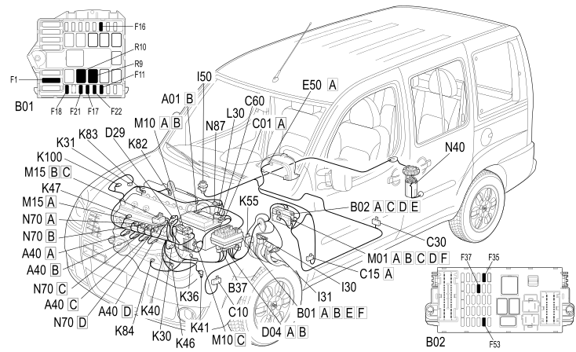

E5050 DIESEL ENGINE ELECTRONIC MANAGEMENT COMPONENT LOCATION
- Path
- Electrical equipment > 1 ELECTRICAL FUNCTIONS > E50 ENGINE CONTROL AND MANAGEMENT SYSTEMS > E5050 DIESEL ENGINES ELECTRONIC MANAGEMENT > E5050 DIESEL ENGINE ELECTRONIC MANAGEMENT COMPONENT LOCATION
- Kind
- topic
- Applies to
- engines: 1.3 JTD 16V; production: da 12/03; only with equipment: MY 2005
- Interactive page
- https://sloeber94.github.io/elrnDB-fDbl/en/#/223002995
Applies to: engines: 1.3 JTD 16V; production: da 12/03; only with equipment: MY 2005

Component code | Description | Reference to the assembly |
|---|---|---|
HEATER PLUGS | ||
JUNCTION UNIT | ||
JUNCTION UNIT UNDER DASHBOARD | ||
BATTERY EARTH | ||
LEFT FRONT EARTH | ||
DASHBOARD EARTH, DRIVER'S SIDE | ||
LEFT REAR EARTH | ||
INJECTION ECU EARTH | ||
FRONT/ENGINE COUPLING | ||
ENGINE CABLES/ENGINE SERVICES CABLE COUPLING | ||
INSTRUMENT PANEL | ||
IGNITION SWITCH | ||
BRAKE PEDAL SWITCH | ||
CLUTCH PEDAL SWITCH | ||
INERTIA SWITCH | ||
ENGINE OIL PRESSURE SENSOR (SWITCH) | ||
WATER IN DIESEL FILTER SENSOR | ||
ENGINE COOLANT TEMPERATURE SENSOR/SENDER UNIT | ||
LAMBDA SENSOR | ||
AIR FLOW METER | ||
RPM SENSOR | ||
TIMING SENSOR. | ||
ACCELERATOR PEDAL POTENTIOMETER | ||
TURBOCHARGING SENSOR | ||
FUEL PRESSURE SENSOR | ||
SPEEDOMETER SENSOR | ||
TEMPERATURE SENSOR AND HEATING RESISTANCE | ||
EGR SOLENOID | ||
BODY COMPUTER | ||
ENGINE MANAGEMENT ECU | ||
HEATER PLUGS CONTROL UNIT | ||
INJECTOR | ||
FUEL PRESSURE REGULATOR ON RAIL |
Topics linked from this page (43)
- 1040A FUEL TANK AND COMPONENTS
- 1044B fuel filters
- 1060G pressure pump electric control
- 1080C exhaust gas recirculation system (e.g.r.)
- 1084A indicators/check devices
- 2180A milometer control
- 5505A multi-function components
- 5520A ignition switch
- 5550D brake and reversing lights
- 5560B analogue control panel
- A040 HEATER PLUGS
- B001 JUNCTION UNIT
- B002 JUNCTION UNIT UNDER DASHBOARD
- C001 BATTERY EARTH
- C010 LEFT FRONT EARTH
- C015 DASHBOARD EARTH, DRIVER'S SIDE
- C030 LEFT REAR EARTH
- C060 INJECTION ECU EARTH
- D004 FRONT/ENGINE COUPLING
- D029 ENGINE CABLES/ENGINE SERVICES CABLE COUPLING
- E050 INSTRUMENT PANEL
- H001 IGNITION SWITCH
- I030 BRAKE PEDAL SWITCH
- I031 CLUTCH PEDAL SWITCH
- I050 INERTIA SWITCH
- K030 ENGINE OIL PRESSURE SENSOR (SWITCH)
- K031 WATER IN DIESEL FILTER SENSOR
- K036 ENGINE COOLANT TEMPERATURE SENSOR/SENDER UNIT
- K040 LAMBDA SENSOR
- K041 AIR FLOW METER
- K046 RPM SENSOR
- K047 TIMING SENSOR.
- K055 ACCELERATOR PEDAL POTENTIOMETER
- K082 TURBOCHARGING SENSOR
- K083 FUEL PRESSURE SENSOR
- K84 SPEEDOMETER SENSOR
- K100 TEMPERATURE SENSOR AND HEATING RESISTANCE
- L030 EGR SOLENOID
- M001 BODY COMPUTER
- M010 ENGINE MANAGEMENT ECU
- M015 HEATER PLUGS CONTROL UNIT
- N070 INJECTOR
- N087 FUEL PRESSURE REGULATOR ON RAIL